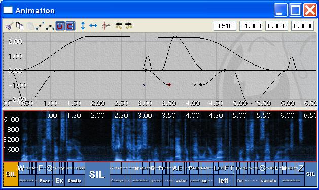

UDN
Search public documentation:
IntroductionToFaceFXCH
English Translation
日本語訳
한국어
Interested in the Unreal Engine?
Visit the Unreal Technology site.
Looking for jobs and company info?
Check out the Epic games site.
Questions about support via UDN?
Contact the UDN Staff
日本語訳
한국어
Interested in the Unreal Engine?
Visit the Unreal Technology site.
Looking for jobs and company info?
Check out the Epic games site.
Questions about support via UDN?
Contact the UDN Staff
UE3 主页 > FaceFX面部动画 >FaceFX简介
FaceFX简介
概述
安装并运行插件
删除FaceFX资源
 从AnimSet编辑器，进入右侧的Mesh标签，找到FaceFX Asset。点击“Clear All Text（清除所有文本）”按钮。
如果有引用FaceFX资源的FaceFX动画集，那么您必须它们取消对该FaceFX资源的引用，可以通过右击这些动画集、选择属性并删除DefaultFaceFXAsset域中的所有文本来完成。
从AnimSet编辑器，进入右侧的Mesh标签，找到FaceFX Asset。点击“Clear All Text（清除所有文本）”按钮。
如果有引用FaceFX资源的FaceFX动画集，那么您必须它们取消对该FaceFX资源的引用，可以通过右击这些动画集、选择属性并删除DefaultFaceFXAsset域中的所有文本来完成。
 现在您应该能够删除Slade FaceFX 资源。请在执行这个动作之前确保FaceFX Studio是关闭状态，否则UnrealEd将会崩溃。从OC3_Slade文件包中的Generic浏览器，右击OC3_Slade_AMesh_FaceFX FaceFX Asset并选择Delete。如果出现错误说FaceFX资源仍然在使用中或者仍然由TransBuffer（传输缓冲）进行引用，那么在您可以删除该FaceFX资源之前您需要保存所有东西并重新启动编辑器才能删除。
当成功删除FaceFX资源后保存该文件包。
现在您应该能够删除Slade FaceFX 资源。请在执行这个动作之前确保FaceFX Studio是关闭状态，否则UnrealEd将会崩溃。从OC3_Slade文件包中的Generic浏览器，右击OC3_Slade_AMesh_FaceFX FaceFX Asset并选择Delete。如果出现错误说FaceFX资源仍然在使用中或者仍然由TransBuffer（传输缓冲）进行引用，那么在您可以删除该FaceFX资源之前您需要保存所有东西并重新启动编辑器才能删除。
当成功删除FaceFX资源后保存该文件包。
从插件中创建一个FXA文件
- 打开下面附件中可找到的Slade sample Max或者Maya文件并运行FaceFX插件。
- 进入包含了“Reference Pose（基准姿势）”的帧。在多数情况下，这将是骨骼绑定姿势。在Slade中，进入帧0。
- 选择所有您希望FaceFX控制的骨骼。对于Slade，选择所有的骨骼。通过点击插件Reference Pose（基准姿势）部分的“Export（导出）”按钮，导出参考姿势。
- 通过点击“Batch Export（批导出）”按钮，批量导出所有的Slade姿势。
- 选择下面附件中所包含的Slade-Batch-Export.txt文件。
- 保存您的FXA文件。
有用的链接
UnrealEd设置
在UnrealEd 中创建一个FaceFX资源
现在您需要为OC3_Slade文件包中的Slade具有骨架的网格物体创建一个新的FaceFX资源。在Slade具有骨架的网格物体上右击，然后选择“Create New FaceFX Asset（创建新的FaceFX资源）”。如果你正使用Max，您将不能使用OC3_Slade文件包中现有的骨架网格物体，而需要自己创建。贴图是相同的。
将一个FXA文件导入UnrealEd
下面将您从Max或者Maya插件创建的FXA文件导入。右击新生成的FaceFX资源并选择“Import from .FXA（从.FXA中导入）”。
从UnrealEd运行FaceFX
现在您可以从UnrealEd内运行FaceFX Studio。右击FaceFX资源并选择“使用FaceFX Studio进行编辑”。
使用FaceFX
创建映射
跳转到FaceFX Mapping(FaceFX映射)标签。Slade使用默认映射，可以通过点击Mapping（映射）选卡顶部的"New Default Mapping(新建默认映射)"按钮来创建该默认映射。 该Mapping（映射）告诉FaceFX当它是识别出特定的音素时创建何种曲线。您可以创建任何种您想要的Mapping(映射)，但是默认映射是基于目标的映射的一个很好的示例，它提供了足够的姿势使得可以真实地移动角色的嘴唇和舌头。
Face Graph设置
如果您查看Face Graph标签，可以看到从Max或者Maya导出的骨骼姿势列表。一些从Max及Maya导出的骨骼姿势有与默认影射中的目标名称相应的名称。当您用FaceFX分析一个音频文件时，将为这些目标创建曲线，而且Slade将与WAV文件口型同步。然而Face Graph能够处理非常复杂的关系，并且能够在Face Graph中创建组合节点与链接使您能够创建非常复杂但是很容易被动画化的行为。欲设置Slade的示例Face Graph设置，您可以运行包括在下面附件中的Slade-Face-Graph-Setup.fxl批处理脚本。它将发出设置Face Graph时所有必须的命令。将此文件复制到C:\目录下并从FaceFX 命令行发出以下命令： exec -f "C:\Slade-Face-Graph-Setup.fxl" 如果您进入Console标签，您会发现批处理脚本中的所有文件都被执行并录入Console标签。在Console标签中只能看到最常用的命令，所以如欲获取对话的完整日志，请查看Binaries\FaceFX\Logs\FaceFxStudioLog.html文件。该文件对调试问题非常有帮助，所以如果您遇到任何使用FaceFX的问题，请在再次启动FaceFX前复制并重命名该日志文件，这样该日志不会被删除。
如果您进入Console标签，您会发现批处理脚本中的所有文件都被执行并录入Console标签。在Console标签中只能看到最常用的命令，所以如欲获取对话的完整日志，请查看Binaries\FaceFX\Logs\FaceFxStudioLog.html文件。该文件对调试问题非常有帮助，所以如果您遇到任何使用FaceFX的问题，请在再次启动FaceFX前复制并重命名该日志文件，这样该日志不会被删除。
 另一种设置Slade的Face Graph的方法是与模板文件（*.FXT）同步。模板使您能够将Face Graph、节点组、影射、相机（目前还不被支持）及工作空间信息从一个actor复制到另一个。从FaceFX您能够从Actor菜单导出与导入一个模板文件。
另一种设置Slade的Face Graph的方法是与模板文件（*.FXT）同步。模板使您能够将Face Graph、节点组、影射、相机（目前还不被支持）及工作空间信息从一个actor复制到另一个。从FaceFX您能够从Actor菜单导出与导入一个模板文件。
生成动画
现在你已经准备就绪，可以为Slade生成一些动画。Face Graph不仅将接收影射表中的目标的值，它还将旋转Slade的头部来强调特定的命令并创建眨眼与眉毛运动曲线。Slade's Face Graph的许多复杂性设计旨在在头部移动时使Slade的眼睑和眼睛能够真实地活动。要想获得较简单的脸部动作图表，那么请查看下面附件中zip文件中包含的Slade-简单示例。 欲生成一个动画，确保您已经首先将您要分析的声音资源（sound asset）与声音提示(sound cue)导入UnrealEd。欢迎声音文件已经出现在OC3_Slade文件包中，因此我们将此文件作为一个例子来分析。在OC3_Slade文件包中选择welcomeCue资源，这样您在下面步骤中可以对其访问。然后从FaceFX浏览器处点击应用程序顶部的“AM”（动画管理器）按钮。 在动画管理器中点击底部的“Create Animation...（创建动画……）”按钮。wizard的操作步骤解释如下：
在动画管理器中点击底部的“Create Animation...（创建动画……）”按钮。wizard的操作步骤解释如下：
- 假设您希望FaceFX为您的动画自动生成曲线，在wizard第一页中选择默认设置。如想从头开始处理动画，您可以选择“Do not generate curves（不生成曲线）”并有选择性地导入一个音频文件。对于无声动画，保留“Use Sound Cue（使用声音提示）”复选框未选中。
- welcomeCue声音资源应该已经被选中，因为在您开始生成动画前它已经被选中。点击‘Next(下一步)’。
- 欢迎声音文件是唯一出现在welcomCue中，它应该被选中。点击‘Next(下一步)’。
- 下面您可以指定一个英文文本文件帮助FaceFX正确分析音频。文本文件可以使用“text tags（文本标签）”生成与特定单词同步的曲线以驱动Face Graph中的节点。除语言目标，眨眼，眉毛及头部运动曲线外，使用以下文本为“向左右注视（Gaze Left and Right）”创建一个曲线：
- Welcome to Face Ef Ex Studio. Change the animation group from ["Gaze Left and Right" v2= -1 v3=-1 easein=.5 easeout=.5] the actor panel [/"Gaze Left and Right"] on your left for additional sample animations.（欢迎进入 Face Ef Ex Studio。为获取更多的示例动画，从["Gaze Left and Right" v2= -1 v3=-1 easein=.5 easeout=.5]中您左侧的actor面板[/"Gaze Left and Right"]更改动画组。）
- 下一个对话框允许您选择想要分析的语言，以及您想使用的协同叙述文件及姿势配置文件。这些配置文件可以在Binaries\FaceFX\Configs目录中找到。使用默认设置并点击Next（下一步）。
- 最后，为动画命名并点击Finish（完成）。
预览动画
现在您已经加载了一个动画，您可以通过Preview（预览）标签观看它。Preview（预览）标签包含一个UE3视窗，右侧带有滚动条，可以位于Animation，Combiner或者Mapping模式。欲观看动画，从左侧actor面板的“Animations”下拉菜单中选择它。然后点击应用程序左下方的播放按钮。注意由于添加的文本标签，Slade移动其头部去看Actor面板。
曲线属性
注意在Actor面板的Animation下拉菜单中，除了“Gaze_Left_and_Right”曲线，动画中所有的曲线都有一个波形按钮。拥有波形按钮的曲线是“owned by analysis（由分析系统拥有）”且它们不能从曲线编辑器或者滚动条处被修改，除非您右击它们并更改其属性，使其变为“owned by the user（由用户拥有）”。每当您在音位(phoneme)条中移动一个音位，“owned by analysis（由分析系统拥有）”曲线将被自动重新生成。
管理/移动 动画
FaceFXAsset中直接存在的所有动画将总是会加载。 即时这些动画用于不同的关卡中。所以最好的方法是制作一组FaceFX动画集(比如，一个动画用于matinee，一个动画集用于关卡中的对话。) 然后您可以通过Kismet动作设置它们。 怎样将动画移动到新的动画集中：- 右击FaceFX资源并选择： "Create new FaceFX AnimSet(创建新的FaceFX动画集)" (这将会把那个动画集和那个FaceFXAsset链接起来
- 打开新的FaceFX动画集
- Actor->Animation Manager（动画管理器）
- 现在您应该可以在下拉列表中看到您创建的组
- 将新的组放到次要面板中
- 将您想从中移动动画的组放置到主要面板中
- 选择动画然后点击Move(移动)按钮来移动它们。
- 如果您移动了很多动画，那么需要等待一会(比如，1-2千个动画将会花费较长的一段时间:-))
获取更多信息
- UE3版本的FaceFX使用一个UE3视口，因此不使用FaceFX Sample渲染引擎或者FXR文件格式
- UE3 版本并不输出FXS文件到存储音频，音位(phoneme)列表等。所有这些数据都被存储在被集成到UE3文件包系统的FaceFX Asset中。
- 除标准的FxCombinerNode、FxBonePoseNode、FxDeltaNode与FxCurrentTimeNode外，UE3版本的FaceFX使用自定义的Unreal节点类型。自定义的Unreal节点类型是 FUnrealFaceFXMorphNode 与 FUnrealFaceFXMaterialParameterNode。查看更多高级FaceFX指南，了解如何使用这些节点。
下载
- 下载示例内容，下载本文档中使用的示例内容。
- 下载FaceFX_Documentation (1.7.3.1)，该文档作为zip压缩包下载。
- 下载FaceFX Documentation (1.7.3.1)，该文档是CHM文件。
- 下载视频指南，示范了Face Graph（面部图表）。